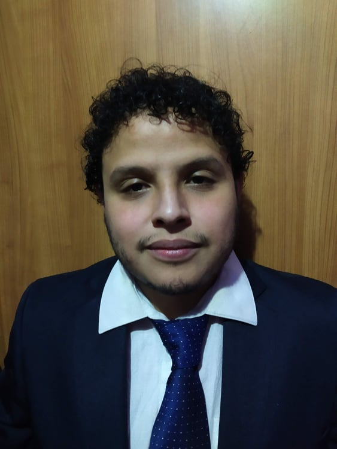

|
 |
Maestro Pablo Adrian Rivera Juvenal Profesor de tiempo completo de la URC. Es maestro en docencia para la educación media superior, licenciado en Filosofía y licenciado en Derecho por parte de la UNAM. Doctorante en Sistemas educativos multimodales por parte de la URC, maestrante en psicología educativa por la Universidad Iberoamericana, pasante en la carrera de herbolaria de la UNIVIM. |